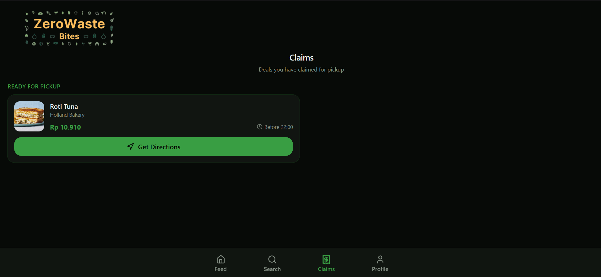

ZeroWaste-Bites
01Aplikasi yang dirancang untuk mengatasi masalah surplus makanan dengan menghubungkan penjual makanan yang memiliki surplus dengan pembeli. Dalam proyek tim ini, saya berperan dalam Backend Development.
Tools: TypeScript, Next.js, Git